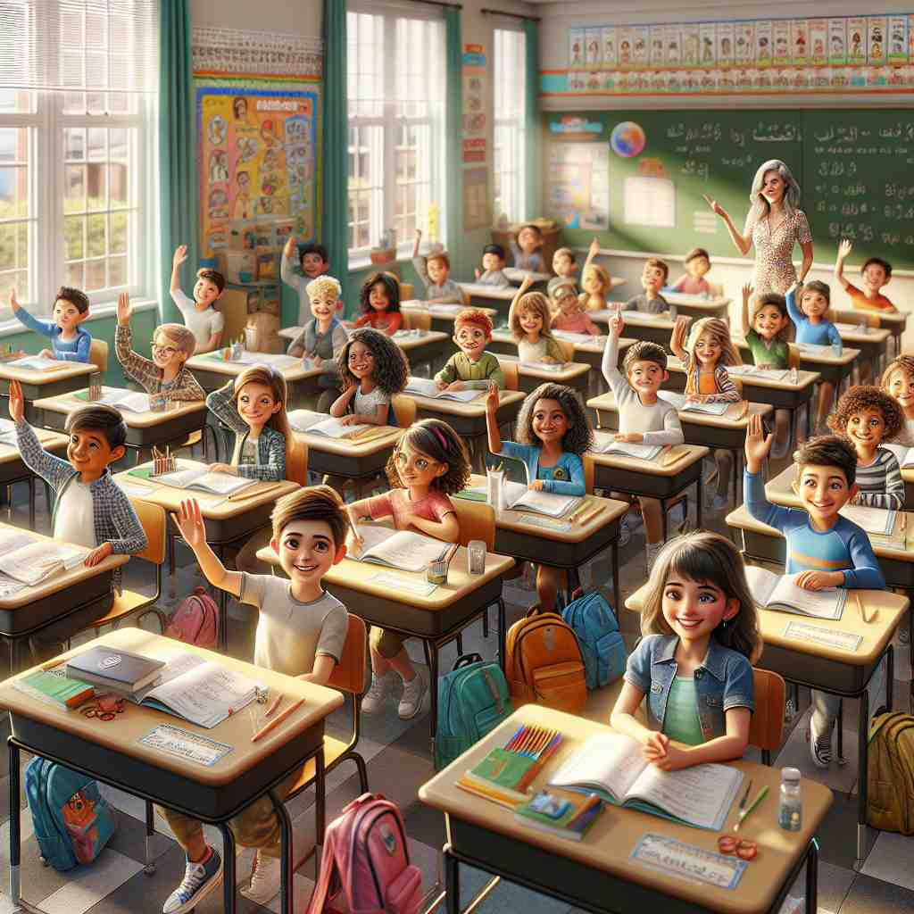
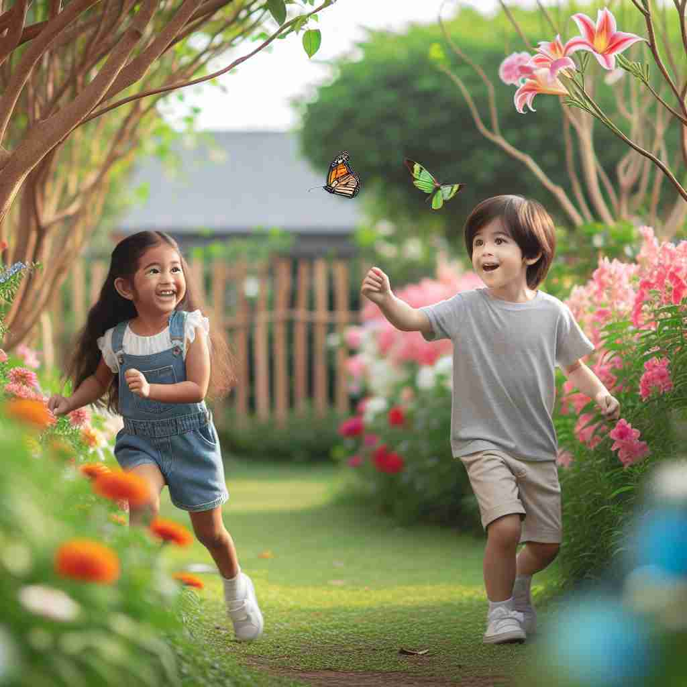

💬 The happy child is playing in the sandbox.

💬 The couple is excited to see their newborn child.

💬 The teacher asked a question, and the children raised their hands to answer.

💬 The playful child runs through the beautiful garden.
🔈 [tʃaɪld]
🗝️ n. a young human being below the age of puberty
🖼️ 在一个阳光充足的游乐场，一个活泼的小女孩正骑着秋千。她的笑容灿烂，身边环绕着一群欢声笑语的朋友，展现了 'child' 作为年幼人类的核心含义。
🔍 想象一个年幼的人，这就是'child'的核心含义。从这个核心概念出发，我们可以理解它如何扩展到包括任何年龄的子女，以及如何比喻性地用于描述不成熟的人、受影响的人或某事物的产物。记住这个年幼人的形象，可以帮助你联想和理解'child'的各种用法。
💬 The happy child is playing in the sandbox.
💬 The couple is excited to see their newborn child.
💬 The teacher asked a question, and the children raised their hands to answer.
💬 The playful child runs through the beautiful garden.
🌳 这个词主要由词根 'child' 构成，表示 '小孩，儿童'，没有常见的前缀或后缀。
💡 可以将 'child' 与自己的童年记忆联系起来，或者想象一个孩子的形象来帮助记忆这个词的意思。
🗝️ n. a son or daughter of any age
🖼️ 在一场温暖的家庭聚会上，一对年迈的父母坐在沙发上，欣赏成人的儿子为他们弹奏钢琴。虽然他已成年，但在父母眼中，他永远是他们的 'child'。
💬 She's the child of famous actors.
❓ 扩展核心含义至任何年龄
🗝️ n. an immature or irresponsible person
🖼️ 在一个公司会议中，一名年轻员工总是打断他人，无法认真倾听。经理无奈地摇头，心想：'他真像个不成熟的 child。'
💬 Stop acting like a child and face your responsibilities.
❓ 借用儿童的特征描述成年人
🗝️ n. a person strongly influenced by another or by a place or state
🖼️ 在寒冷的冬天，一个年轻的诗人坐在纽约的中央公园，他深受这座城市的激励，认为自己是 'a child of New York'，因为这座城市塑造了他的创作风格。
💬 He's a child of the 60s.
❓ 比喻某人如同他人或某地的"子女"
🗝️ n. a product or result of something
🖼️ 在一个创新科技展览上，工程师们展示着他们最新开发的机器人。这些机器人是团队多年研究和努力的 'children'，代表了创新的结晶。
💬 This project is the child of years of research.
❓ 比喻某事物是另一事物的"后代"